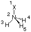
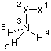
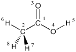
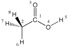
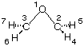
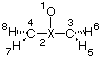
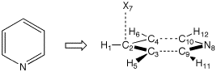
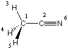
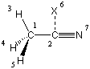

X1
N2 1 1.0
H3 2 r3 1 a3
H4 2 r3 1 a3 3 +120.
H5 2 r3 1 a3 3 -120.
r3=1.0
a3=110.
|
| 
|
In this case the number of variables can be reduced to two since the definition of the
relative position of the hydrogen atoms uses the intrisic properties of the threefold
principal axis. The dihedral angles of 120.0 degrees must remain constant during the geometry
optimization and these values are therefore not defined through variables, but as
numerical constants in the Z-matrix. Using the above Z-matrix, the full C3v
symmetry of ammonia is recognized by Gaussian, but optimization is consequently
performed in the Cs point group due to the lack of support for threefold symmetry
axes. At the HF/6-31G(d) level of theory,
the geometry is optimized to tight convergence criteria in five cycles with optimized
parameters of r3=1.002522 and a3=111.6755, the HF/6-31G(d) total energy for this structure
being -56.1843563au.
One complication sometimes arising from the use of dummy atoms is that one looses sight of the
actual number of degrees of freedom. A nonlinear, asymmetric molecular system containing N atoms
has 3N-6 degrees of freedom (=independent structural parameters). For linear, asymmetric systems
this number is increased to 3N-5. Using ammonia again as an example, we should have 3*4-6 = 6
independent structural parameters if symmetry is not accounted for. We have seen above that
this number can be reduced to 2 on full consideration of its C3v symmetry. How many
degrees of freedom remain after dummy atoms have been used in Z-matrix construction is, however,
rather difficult to see in some cases. One can therefore instruct Gaussian to check
whether the structural variables used in a given Z-matrix are all linearly independent (that is,
describe different structural degrees of freedom) and overall don't exceed the correct number in
a given point group symmetry. This is done by using
FOpt instead of Opt
as the keyword. One example, that demonstrates a problematic situation, is the following:
X1
X2 1 1.0
N3 2 1.0 1 90.
H4 3 r4 2 a4 1 d4
H5 3 r4 2 a4 1 +120.
H6 3 r4 2 a4 1 -120.
r4=1.0
a4=110.
d4=0.0
|
| 
|
Here the position of dummy atom X1 is indirectly optimized through its use for the definition of
hydrogen atom H4. Running this input with the FOpt keyword gives the following error:
FOPT requested but NVar= 3 while NDOF= 2.
In most cases, the optimization of the position of dummy atoms leads to larger numbers of
geometry optimization cycles and in some cases to incomplete optimizations.
Systems containing methyl substituents or similar substructures benefit from an "internal" definition
of these groups in the sense that the positions of the three hydrogen atoms are defined relative to each
other (rather than to an external reference). This can be demonstrated using acetic acid as an example:
0 1
C1
C2 1 r2
O3 1 r3 2 a3
O4 1 r4 2 a4 3 180.0
H5 4 r5 1 a5 3 0.0
H6 2 r6 1 a6 3 0.0
H7 2 r7 1 a7 6 d7
H8 2 r7 1 a7 6 -d7
r2=1.51
r3=1.21
r4=1.36
r5=0.98
r6=1.09
r7=1.09
a3=126.
a4=111.
a5=105.
a6=109.
a7=109.
d7=-120.
|
| 
|
The position of hydrogen atom H6 is here defined with reference to the atoms C2/C1/O3, while the
dihedral angles for the other two hydrogen atoms H7 and H8 are defined relative to H6 (and not O3).
The advantage of this type of definition becomes obvious when we want to explore another conformation
of the methyl group with respect to the remainder of the molecule in order to identify the energetically
most favorable conformation of acetic acid. While the above conformation eclipses one of the C-H
bonds with the C-O double bond, the alternative conformation below assumes an
antiperiplanar arrangement.
0 1
C1
C2 1 r2
O3 1 r3 2 a3
O4 1 r4 2 a4 3 180.0
H5 4 r5 1 a5 3 0.0
H6 2 r6 1 a6 3 180.0
H7 2 r7 1 a7 6 d7
H8 2 r7 1 a7 6 -d7
r2=1.51
r3=1.21
r4=1.36
r5=0.98
r6=1.09
r7=1.09
a3=126.
a4=111.
a5=105.
a6=109.
a7=109.
d7=-120.
|
| 
|
A comparison of the Z-matrices for these two conformations reveals that the only difference
in the starting conformation is in the dihedral angle given for H6 (0.0 in the first and 180.0
in the second conformation). Through their definition relative to hydrogen H6 the positions
of H7 and H8 change accordingly. Both starting conformations optimize smoothly in Z-matrix coordinates
at the B3LYP/6-31G(d) level. At this level of theory the first conformation is 1.5 kJ/mol
more favorable than the second. Frequency calculations indicate that the first is a true minimum
on the potential energy surface, while the second corresponds to a transition state for methyl
group rotation.
2) Systems containing rings
The construction of ring systems is a particular challenge due to the fact that one of the ring
bonds cannot be specified in a Z-matrix. We will use oxirane (C2H4O,
ethylene oxide) here as an example to demonstrate the situation. Oxirane is C2v
symmetric and a Z-matrix reflecting this symmetry is as follows:
O1
C2 1 r2
C3 1 r2 2 a3
H4 2 r4 1 a4 3 d4
H5 2 r4 1 a4 3 -d4
H6 3 r4 1 a4 2 -d4
H7 3 r4 1 a4 2 d4
r2=1.25
r4=1.10
a3=73.76
a4=101.84
d4=-106.234
|
| 
|
With this definition, the distance between C2 and C3 is not defined explicitly as a variable,
but indirectly through variable a3 describing the bond angle C3-O1-C2. Small variations in
this angle will, unfortunately, lead to quite large changes in the C2-C3 distance. As a
consequence, convergence of the optimization is less efficient and takes 8 steps to complete.
Alternatively, the geometry can also be defined through inclusion of one dummy atom located
on the principal C2 axis:
O1
X2 1 r2
C3 2 r3 1 90.
C4 2 r3 1 90. 3 180.
H5 3 r5 2 a5 1 d5
H6 3 r5 2 a5 1 -d5
H7 4 r5 2 a5 1 -d5
H8 4 r5 2 a5 1 d5
r2=1.0
r3=0.75
r5=1.10
a5=110.
d5=90.
|
| 
|
In this Z-matrix all bond distances inside the ring are defined through a distance variable, even though these
variables do clearly not describe what is typically considered a "bond distance". Optimization is more efficient
and is complete within 7 steps. The difference between these two approaches increases with system size and
complexity.
The same general strategy can be used to define Z-matrices for six-membered ring systems.
The C2v symmetric structure of pyridine, for example, can most readily be constructed
by first describing the C3-C5 fragment and subsequently positioning the remaining part of the
ring system with the help of one dummy atom:
H1
C2 1 r2
C3 2 r3 1 a3
C4 2 r3 1 a3 3 180.0
H5 3 r5 2 a5 1 0.0
H6 4 r5 2 a5 1 0.0
X7 2 1.0 1 90.0 3 -90.0
N8 2 r8 7 90.0 1 180.0
C9 8 r9 2 a9 3 0.0
C10 8 r9 2 a9 4 0.0
H11 9 r11 8 a11 10 180.0
H12 10 r11 8 a11 9 180.0
r2=1.1
r3=1.40
r5=1.1
r8=2.8
r9=1.35
r11=1.1
a3=120.
a5=120.
a9=60.
a11=120.
|
| 
|
The parameter r8 in this Z-matrix describing the distance between ring atoms C2 and N8
effectively defines the distance between ring atoms C3/C9 and C4/C10. These latter
bond distances are otherwise difficult to describe while retaining full C2v symmetry.
3) Linear Systems
A suitable example for a molecule containing a linear arrangement of atoms is acetonitrile
(CH3CN), one of the more common solvents used in organic and biological chemistry.
This system belongs to the C3v point group and contains a linear C-C-N arrangement.
A first attempt at a Z-matrix is:
C1
C2 1 r2
H3 1 r3 2 a3
H4 1 r3 2 a3 3 120.
H5 1 r3 2 a3 3 -120.
N6 2 r6 1 180.0 3 180.0
r2=1.45
r3=1.1
r6=1.2
a3=110.
|
| 
|
The use of this Z-matrix leads, however, to the following error already during the first
step of the geometry optimization:
Error on Z-matrix card number 6
angle Alpha is outside the valid range of 0 to 180.
Conversion from Z-matrix to cartesian coordinates failed:
What is located on "card 6" (=line 6 of the Z-matrix) is the definition of the
position of atom 6. At the heart of the problem is the definition of dihedral angles in general.
By definition, dihedral angle D(1/2/3/4) is the angle between two planes, the first being described
by atoms 1/2/3 and the second one described by atoms 2/3/4. As soon as atoms 1/2/3 or 2/3/4 fall
on one line, the definition of one of the planes has vanished and the dihedral angle is undefined.
One could attempt to "solve" the situation by bending the nitrile group a little bit out of
linearity, introducing one additional variable:
C1
C2 1 r2
H3 1 r3 2 a3
H4 1 r3 2 a3 3 120.
H5 1 r3 2 a3 3 -120.
N6 2 r6 1 a6 3 180.0
r2=1.45
r3=1.1
r6=1.2
a3=110.
a6=177.
Since support for the principal C3 axis is lacking anyway, one could as well start
with a Cs symmetric starting structure, but introduce threefold symmetry through the
backdoor using equal C-H bond lengths and H-C-C bond angles. This time the program runs for a
few optimization cycles until the C-C-N bond angle (variable a6) approaches very closely to
180.0 degrees. Gaussian then stops either with the error message cited above or
(more appropriately) with:
This structure is nearly, but not quite of a higher symmetry.
Consider Symm=Loose if the higher symmetry is desired.
Stoichiometry C2H3N
Framework group C1[X(C2H3N)]
Deg. of freedom 12
Full point group C1 NOp 1
Omega: Change in point group or standard orientation.
It thus appears that this strategy doesn't represent a good solution to the problem of
large bond angles either. Dividing the critical bond angle in two parts through introduction of
a dummy atom, however, solves the problem:
C1
C2 1 r2
H3 1 r3 2 a3
H4 1 r3 2 a3 3 120.0
H5 1 r3 2 a3 3 -120.0
X6 2 1.0 1 90.0 3 0.0
N7 2 r7 6 90.0 1 180.0
r2=1.45
r3=1.1
r7=1.2
a3=110.
|
| 
|
In this case the optimization is smoothly performed to tight convergence
criteria within 5 steps at the HF/6-31G(d) level of theory with final values
of r2=1.467835, r3=1.082125, r7=1.134723, a3=109.8344
and a final total energy of -131.9275339au. Similar situations exist in many
other compounds containing C-C or C-N triple bonds as well as transition metal
complexes containing CO ligands.
In conclusion, optimization in internal coordinates is particularly helpful for highly symmetric systems,
for which
the Z-matrices can be constructed easily through the appropriate use of dummy atoms. Bond distances
should always be positive, bond angles between 0.0 and 180.0 degrees, and dihedral angles between 0.0
and 360.0 degrees.
last changes: 12.04.2008, HZ
questions & comments to: zipse@cup.uni-muenchen.de